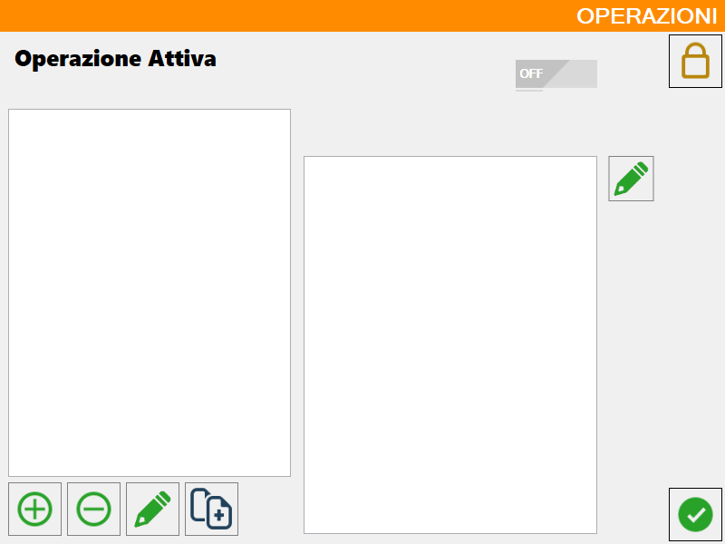
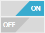
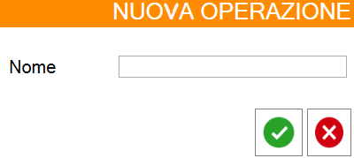
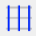
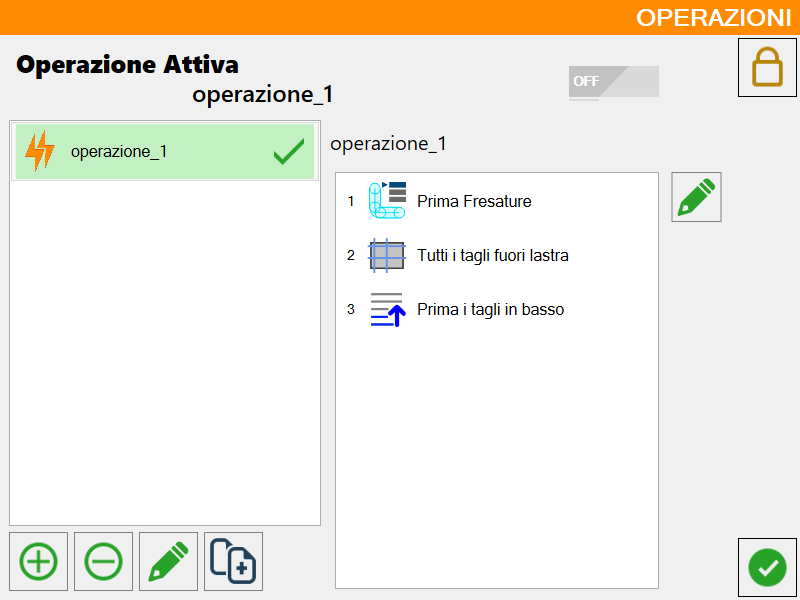

All’interno del pannello dei parametri utente, nella prima finestra valori utente troviamo una voce “operazione attiva” dove di fianco viene visualizzata l’operazione che l’operatore ha attivato, se si vuole aggiungere, modificare o cancellare si deve premere sulla matita a fianco e si apre questa finestra:

Pulsanti barra inferiore
Pulsanti per la gestione generica delle macro
 | Attiva/disattiva operazioni in automatico |
 | Gestisci operazioni |
Pulsanti per gestire la lista delle macro:
Aggiungi | |
Elimina | |
 | Modifica nome |
 | Copia |
Pulsante per gestire il contenuto di una singola macro:
| Modifica operazione |
Gestisci operazioni
Si apre la seguente finestra dove si può scegliere se attivare o meno un’operazione per ognuna delle quattro tipologie di operazioni che verranno illustrate di seguito (Standard, Ordinamento lavorazioni in testa, Ordinamento lavorazioni in coda e Ordinamento in base ai tagli):

Aggiungi operazione
Si apre la seguente finestra che permette di impostare il nome per la nuova lavorazione:

Una volta confermata la scelta del nome della nuova macro, questa verrà aggiunta nel pannello a sinistra e sarà inizialmente vuota:

Modifica operazione
Di seguito è mostrata la finestra di modifica relativa all’operazione selezionata:

Pulsanti operazioni selezionate
 | Ordinamento per lavorazione |
 | Operazioni standard |
 | Ordinamento lavorazioni in testa |
 | Ordinamento lavorazioni in coda |
 | Ordinamento in base ai tagli |
Pulsanti di gestione delle operazioni
 | Aggiungi/rimuovi operazione |
 | Sposta ordinamento |
Inverti ordine delle operazioni (Opzionale)
Si può scegliere di attivare questo optional che permette di invertire l’ordine delle operazioni.
Se per esempio io premo sulle seguenti operazioni:
Prima i tagli in basso
Esterno interno
Prima i tagli a sinistra
L’ordine reale delle operazioni è:
Prima i tagli a sinistra
Esterno interno
Prima i tagli in basso
Perché vengono sovrascritte le posizioni, quindi per fare in modo che l’ordine delle operazioni sia quello cronologico esiste questo optional.
Con esso infatti in questo caso l’ordine delle operazioni è questo:
Prima i tagli in basso
Esterno interno
Prima i tagli a sinistra
Attivazione di una macro
Quando la macro è stata creata e modificata a piacere, è possibile selezionarla e attivarla.
Abilita macro disabilitato | |
 | Abilita macro abilitato |
Macro attivata |
Procedura creazione e caricamento di una macro
Il primo passo consiste nell’assicurarsi che il pulsante di attivazione sia impostato su ON, per poter successivamente impiegare la macro desiderata.
Si procede con la creazione di una nuova operazione impostando un nome, si clicca di seguito sulla nuova operazione visibile da ora nella lista e subito dopo sul pulsante di modifica sul lato destro del pannello per avere accesso al pannello che permette di modificare la macro.
Per ciascuna tipologia di operazione, selezionare le operazioni desiderate dalla lista a sinistra (Disponibili) e aggiungerle alla lista delle operazioni selezionate. Si può quindi procedere a confermare la configurazione per visualizzarla e gestirla nel pannello operazioni.
È possibile effettuare il caricamento della macro cliccando il pulsante collocato appena a destra del nome della macro.
Di seguito è fornito un esempio della macro denominata “operazione_1“, contenente 3 operazioni visibili sulla destra, ed evidenziata in verde con il corrispondente simbolo perché in stato “caricata“.
Il primo passo consiste nell'assicurarsi che il pulsante di attivazione sia impostato su ON, condizione necessaria per poter utilizzare la macro desiderata. Una volta attivato, si procede con la creazione di una nuova operazione, assegnandole un nome identificativo. Dopo averla creata, l'operazione apparirà nella lista: è quindi necessario selezionarla e cliccare sul pulsante di modifica situato sul lato destro del pannello, così da accedere all’interfaccia di configurazione della macro.
All'interno di questa interfaccia, per ciascuna tipologia di operazione, è possibile selezionare gli elementi desiderati dalla lista di sinistra (etichettata come "Disponibili") e aggiungerli alla lista di destra, che rappresenta le operazioni selezionate. Completata la selezione, è sufficiente confermare la configurazione per renderla visibile e gestibile nel pannello delle operazioni.
Il caricamento della macro può essere eseguito cliccando sull'apposito pulsante, posizionato immediatamente a destra del nome assegnato alla macro. A titolo esemplificativo, si consideri la macro denominata “operazione_1”: questa include tre operazioni, visualizzate nel pannello a destra, ed è evidenziata in verde con l'apposito simbolo che ne indica lo stato “caricata”.
